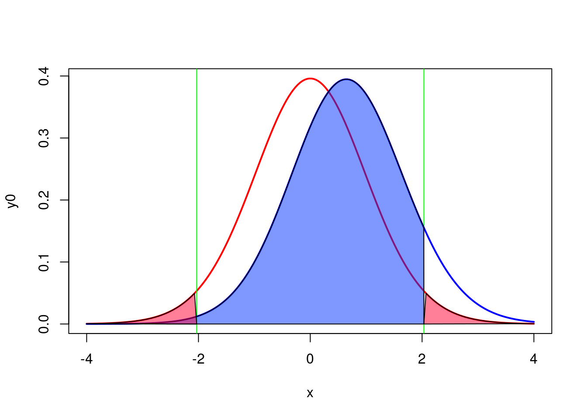
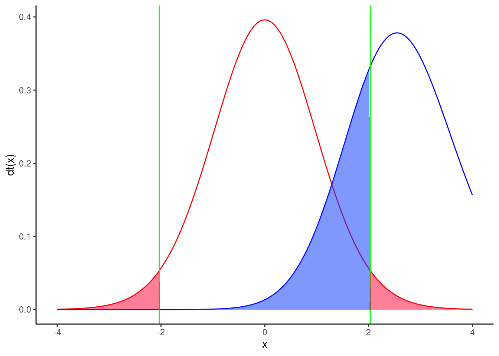

8 Analyse de puissance avec R et G*Power
Objectifs de ce chapitre :
- Pouvoir calculer la puissance d’un test de t avec R et G*Power
- Pouvoir calculer l’effectif requis pour obtenir la puissance désirée avec un test de t
- Pouvoir calculer la taille d’effet détectable par un test de t étant donné l’effectif, la puissance et \(\alpha\)
- Comprendre comment la puissance change lorsque l’effectif augmente, la taille d’effet change, ou lorsque \(\alpha\) diminue
- Comprendre comment la puissance est affectée lorsque l’on passe d’un test bilatéral à un test unilatéral
8.1 La théorie
8.1.1 Qu’est-ce que la puissance?
La puissance est la probabilité de rejeter l’hypothèse nulle quand elle est fausse.
8.1.2 Pourquoi faire une analyse de puissance?
Évaluer l’évidence
L’analyse de puissance effectuée après avoir accepté une hypothèse nulle permet de calculer la probabilité que l’hypothèse nulle soit rejetée si elle était fausse et que la taille d’effet était d’une valeur donnée. Ce type d’analyse a posteriori est très commun.
Planifier de meilleures expériences
L’analyse de puissance effectuée avant de réaliser une expérience (le plus souvent après une expérience préliminaire cependant), permet de déterminer le nombre d’observations nécessaires pour détecter un effet d’une taille donnée à un niveau fixe de probabilité (la puissance). Ce type d’analyse a priori devrait être réalisé plus souvent.
Estimer la “limite de détection” statistique
L’effort d’échantillonnage est souvent déterminé à l’avance (par exemple lorsque vous héritez de données récoltées par quelqu’un d’autre), ou très sévèrement limité (lorsque les contraintes logistiques prévalent). Que ce soit a priori ou a posteriori l’analyse de puissance vous permet d’estimer, pour un effort d’échantillonnage donné et un niveau de puissance fixe, quelle est la taille minimale de l’effet qui peut être détecté (comme étant statistiquement significatif).
8.1.3 Facteurs qui affectent la puissance
Il y a 3 facteurs qui affectent la puissance d’un test statistique.
Le critère de décision
La puissance dépend de \(\alpha\), le seuil de probabilité auquel on rejette l’hypothèse nulle. Si ce seuil est très strict (i.e. si \(\alpha\) est fixé à une valeur très basse, comme 0.1% ou p = 0.001), alors la puissance sera plus faible que si le seuil était moins strict.
La taille de l’échantillon
Plus l’échantillon est grand, plus la puissance est élevée. La capacité d’un test à détecter de petites différences comme étant statistiquement significatives augmente avec une augmentation du nombre d’observations.
La taille d’effet
Plus la taille d’effet est grande, plus un test a de puissance. Pour un échantillon de taille fixe, la capacité d’un test à détecter un effet comme étant statistiquement significatif est plus élevée si l’effet est grand que s’il est petit. La taille d’effet est en fait une mesure du degré de fausseté de l’hypothèse nulle.
8.2 Qu’est ce que G*Power?
G*Power est un programme gratuit, développé par des psychologues de l’Université de Dusseldorf en Allemagne. Le programme existe en version Mac et Windows. Il peut cependant être utilisé sous linux via Wine ou une machine virtuelle.
G*Power vous permettra d’effectuer une analyse de puissance pour la majorité des tests que nous verrons au cours de la session sans avoir à effectuer des calculs complexes ou farfouiller dans des tableaux ou des figures décrivant des distributions ou des courbes de puissance. G*power est vraiment un outil très utile que vous devrez maîtriser.
Il est possible de faire toutes les analyses de G*power avec R, mais cela est un peu plus complexes et nécessite un peu plus de code et donc une meilleure compréhension du processus. Dans les cas les plus simple le code R est aussi fourni.
Exercice
Téléchargez le programme ici et installez-le sur votre ordi et votre station de travail au laboratoire (si ce n’est déjà fait).
8.4 Puissance pour un test de t comparant deux moyennes
Important
L’ensemble des analyses de puissance décrites après peuvent être réalisé avec 2 fonctions dans R.
-
pwr.t.test(): lorsque les tailles d’échantillons sont identiques -
pwr.t2n.test(): lorsque les échantillons ont des tailles différentes
L’objectif de cette séance de laboratoire est de vous familiariser avec G*Power et de vous aider à comprendre comment les quatre paramètres des analyses de puissance (\(\alpha\), \(\beta\), effectif et taille d’effet) sont reliés entre eux. On examinera seulement l’un des nombreux tests : le test de t permettant de comparer deux moyennes indépendantes. C’est le test le plus communément utilisé par les biologistes, vous l’avez tous déjà utilisé, et il conviendra très bien pour les besoins de la cause. Ce que vous apprendrez aujourd’hui s’appliquera à toutes les autres analyses de puissance que vous effectuerez à l’avenir.
Jaynie Stephenson a étudié la productivité des ruisseaux de la région d’Ottawa. Elle a, entre autres, quantifié la biomasse des poissons dans 18 ruisseaux sur le Bouclier Canadien d’une part, et dans 18 autres ruisseaux de la vallée de la rivière des Outaouais et de la rivière Rideau d’autre part. Elle a observé une biomasse plus faible dans les ruisseaux de la vallée (2.64 \(g/m^2\), écart-type=3.28) que dans ceux du Bouclier (3.31 \(g/m^2\), écart-type=2.79). En faisant un test de t pour éprouver l’hypothèse nulle que la biomasse des poissons est la même dans les deux régions, elle obtient:
Pooled-Variance Two-Sample t-Test
t = -0.5746, df = 34, p-value = 0.5693Elle accepte l’hypothèse nulle (puisque p est plus élevé que 0.05) conclue donc que la biomasse moyenne des poissons est la même dans ces deux régions.
8.4.1 Analyse post-hoc - Calculer la puissance du test
Compte tenu des valeurs des moyennes observées et de leur écart- type, on peut utiliser G*Power pour calculer la puissance du test de t bilatéral pour deux moyennes indépendantes et pour la taille d’effet (i.e. la différence entre la biomasse entre les deux régions, pondérée par les écarts-type) à \(\alpha\) = 0.05.
Démarrer G*Power.
- À Test family, choisir: t tests
- À Statistical test, choisir: Means: Difference between two independent means (two groups)
- À Type of power analysis, choisir: Post hoc: Compute achieved power - given \(\alpha\), sample size, and effect size
- Dans Input Parameters,
- à la boîte Tail(s), choisir: Two,
- vérifier que \(\boldsymbol{\alpha}\) err prob est égal à 0.05
- inscrire 18 pour Sample size group 1 et 2
- pour calculer la taille d’effet (Effect size d), cliquer sur le bouton Determine =>
- Dans la fenêtre qui s’ouvre à droite, sélectionner \(\boldsymbol{n1 = n2}\)
- entrer les moyennes (Mean group 1 et 2)
- entrer les écarts types (SD \(\boldsymbol{\sigma}\) group 1 et 2)
- cliquer sur le bouton Calculate and transfer to main window
- Cliquer sur le bouton Calculate dans la fenêtre principale et vous devriez obtenir ceci:
La m√™me analyse peut √™tre faites en utlisant R. D‚Äôabord, il faut calculer la taille d‚Äôeffet d pour un test de t comparant deux moyennes, puis utiliser la fonction pwr.t.test du paquet pwr üì¶. Le plus simple comme nous allons estimer la taille d‚Äôeffet d plusieurs fois et de cr√©er une petite fonction qui estime d bas√© sur les param√®tres n√©cessaires.
# charger le paquet pwr
library(pwr)
# définir une fonction pour d
d <- function(u1, u2, sd1, sd2) {
abs(u1 - u2) / sqrt((sd1^2 + sd2^2) / 2)
}
# analyse de puissance
d_cohen <- d(u1 = 2.64, sd1 = 3.28, u2 = 3.31, sd2 = 2.79)
pwr.t.test(
n = 18, d = d_cohen, sig.level = 0.05,
type = "two.sample"
)
Two-sample t test power calculation
n = 18
d = 0.220042
sig.level = 0.05
power = 0.09833902
alternative = two.sided
NOTE: n is number in *each* group# graphique comme g*Power
x <- seq(-4, 4, length = 200)
y0 <- dt(x, 34)
y1 <- dt(x, 34, ncp = d_cohen * sqrt(36) / 2)
plot(x, y0, type = "l", col = "red", lwd = 2)
qc <- qt(0.025, 34)
abline(v = qc, col = "green")
abline(v = -qc, col = "green")
lines(x, y1, type = "l", col = "blue", lwd = 2)
# l'erreur de type 2 correspond à la zone bleue
polygon(
c(x[x <= -qc], -qc), c(y1[x <= -qc], 0),
col = rgb(red = 0, green = 0.2, blue = 1, alpha = 0.5)
)

qc <- qt(0.025, 34)
ncp <- d_cohen * sqrt(36) / 2
dat <- data.frame(
x = seq(-4, 4, length = 200),
y0 = dt(x, (n - 1) * 2),
y1 = dt(x, (n - 1) * 2, ncp = ncp)
) %>%
mutate(
area = ifelse(x <= qc, y1, 0)
)
ggplot(dat, aes(x = x)) +
geom_line(aes(y = y0), color = "red") +
geom_line(aes(y = y1), color = "blue") +
geom_vline(xintercept = qcl, color = "green") +
geom_area(
aes(x = x, y = area),
fill = rgb(red = 0, green = 0.2, blue = 1, alpha = 0.5)
) +
theme_classic() +
ylab("dt(x)")Étudions un peu la figure Figure fig-gpower-1.
- La courbe de gauche, en rouge, correspond à la distribution de la statistique t si \(\boldsymbol{H_0}\) est vraie (i.e si les deux moyennes étaient égales) compte tenu de l’effectif (18 dans chaque région) et des écarts- types observés.
- Les lignes verticales vertes correspondent aux valeurs critiques de t pour \(\boldsymbol{\alpha = 0.05}\) et un effectif total de 36 (2x18).
- Les régions ombrées en rose correspondent aux zones de rejet de \(\boldsymbol{H_0}\) (\({\alpha/2}\)) . Si Jaynie avait obtenu une valeur de t en dehors de l’intervalle délimité par les valeurs critiques allant de -2.03224 à 2.03224, alors elle aurait rejeté \(H_0\), l’hypothèse nulle d’égalité des deux moyennes. En fait, elle a obtenu une valeur de t égale à -0.5746 et conclu que la biomasse est la même dans les deux régions.
- La courbe de droite, en bleu, correspond à la distribution de la statistique t si \(\boldsymbol{H_1}\) est vraie (ici \(H_1\) correspond à une différence de biomasse entre les deux régions de \(3.33-2.64=0.69g/m^2\), compte tenu des écarts-types observés). Cette distribution correspond à ce qu’on devrait s’attendre à observer si \(H_1\) était vraie et que l’on répétait un grand nombre de fois les mesures dans des échantillons aléatoires de 18 ruisseaux des deux régions en calculant la statistique t à chaque fois. En moyenne, on observerait une valeur de t d’environ 0.6.
- Notez que la distribution de droite chevauche considérablement celle de gauche, et une bonne partie de la surface sous la courbe de droite se retrouve à l’intérieur de l’intervalle d’acceptation de \(H_0\), délimité par les deux lignes vertes et allant de -2.03224 à 2.03224. Cette proportion, correspondant à la partie ombrée en bleu sous la courbe de droite et dénoté par \(\beta\) correspond au risque d’erreur de type II qui est d’accepter \(H_0\) quand \(H_1\) est vraie.
- La puissance est simplement \(\boldsymbol{1-\beta}\), et est ici de 0.098339 (Résultats du test d’estimation de puissance) . Donc, si la biomasse différait de 0.69\(g/m^2\) entre les deux régions, Jaynie n’avait que 9.8% des chances d’être capable de détecter une différence statistiquement significative à \(\alpha=5%\) en échantillonnant 18 ruisseaux de chaque région.
Récapitulons: La différence de biomasse entre les deux régions n’est pas statistiquement significative d’après le test de t. C’est donc que cette différence est relativement petite compte tenu de la précision des mesures. Il n’est donc pas très surprenant que la puissance, i.e. la probabilité de détecter une différence significative, soit faible. Toute cette analyse ne nous informe pas beaucoup.
Une analyse de puissance post hoc avec la taille d’effet observé n’est pas très utile. On la fera plutôt pour une taille d’effet autre que celle observée quand \(H_0\) est acceptée. Quelle taille d’effet utiliser? C’est la biologie du système étudié qui peut nous guider. Par exemple, en ce qui concerne la biomasse des poissons, on pourrait s’attendre à ce qu’une différence de biomasse du simple au double (disons de 2.64 à 5.28 \(g/m^2\)) ait des conséquences écologiques. On voudrait s’assurer que Jaynie avait de bonnes chances de détecter une différence aussi grande que celle-là avant d’accepter ses conclusions que la biomasse est la même entre les deux régions. Quelles étaient les chances de Jaynie de détecter une différence de 2.64 \(g/m^2\) entre les deux régions? G*Power peut nous le dire.
Exercice
Changer la moyenne du groupe 2 à 5.28, recalculer la taille d’effet, et cliquer sur Calculate pour obtenir Figure fig-gpower-2.

pwr.t.test(
n = 18, d = d(u1 = 2.64, sd1 = 3.28, u2 = 5.28, sd2 = 2.79),
sig.level = 0.05, type = "two.sample"
)
Two-sample t test power calculation
n = 18
d = 0.8670313
sig.level = 0.05
power = 0.7146763
alternative = two.sided
NOTE: n is number in *each* group

La puissance est de 0.71, donc Jaynie avait une chance raisonnable (71%) de détecter une différence du simple au double avec 18 ruisseaux dans chaque région.
Notez que cette analyse de puissance post hoc pour une taille d’effet jugée biologiquement significative est bien plus informative que l’analyse précédente pour la taille d’effet observée (qui est celle effectuée par défaut par bien des néophytes et de trop nombreux logiciels qui essaient de penser pour nous). En effet, Jaynie n’a pu détecter de différences significatives entre les deux régions. Cela pourrait être pour deux raisons: soit qu’il n’y a pas de différences entre les régions, ou alors parce que la précision des mesures est si faible et l’effort d’échantillonnage si limité qu’il était très peu probable de détecter même d’énormes différences. La deuxième analyse de puissance permet d’éliminer cette seconde possibilité puisque Jaynie avait 71% des chances de détecter une différence du simple au double.
8.4.2 Analyse à priori - Calculer la taille de l’effectif à échantillonner
Supposons qu’on puisse défendre la position qu’une différence de biomasse observée par Jaynie entre les deux régions, \(3.31- 2.64=0.67g/m^2\), soit écologiquement significative. On devrait donc planifier la prochaine saison d’échantillonnage de manière à avoir de bonnes chances de détecter une différence de cette taille. Combien de ruisseaux Jaynie devrait-elle échantillonner pour avoir 80% des chances de la détecter (compte tenu de la variabilité observée)?
Exercice
Changer le type d’analyse de puissance dans G*Power à A priori: Compute sample size - given \(\alpha\), power, and effect size. Assurez-vous que les valeurs pour les moyennes et les écarts-type soient celles qu’a obtenu Jaynie, recalculez la taille de l’effet, et inscrivez 0.8 pour la puissance Figure fig-gpower-3.
pwr.t.test(
power = 0.8, d = d(u1 = 2.64, sd1 = 3.28, u2 = 3.31, sd2 = 2.79),
sig.level = 0.05, type = "two.sample"
)
Two-sample t test power calculation
n = 325.1723
d = 0.220042
sig.level = 0.05
power = 0.8
alternative = two.sided
NOTE: n is number in *each* groupOuch! Il faudrait échantillonner 326 ruisseaux dans chaque région! Cela coûterait une fortune et exigerait de nombreuses équipes de travail. Sans cela, on ne pourrait échantillonner que quelques dizaines de ruisseaux, et il serait peu probable que l’on puisse détecter une si faible différence de biomasse entre les deux régions. Ce serait vraisemblablement en vain et pourrait être considéré comme une perte de temps: pourquoi tant d’efforts et de dépenses si les chances de succès sont si faibles.
Si on refait le même calcul pour une puissance de 95%, on obtient 538 ruisseaux par région. Augmenter la puissance ça demande plus d’effort.
pwr.t.test(
power = 0.95, d = d(u1 = 2.64, sd1 = 3.28, u2 = 3.31, sd2 = 2.79),
sig.level = 0.05, type = "two.sample"
)
Two-sample t test power calculation
n = 537.7286
d = 0.220042
sig.level = 0.05
power = 0.95
alternative = two.sided
NOTE: n is number in *each* group8.4.3 Analyse de sensitivité - Calculer la taille d’effet détectable
Compte tenu de la variabilité observée, d’un effort d’échantillonnage de 18 ruisseaux par région, et en conservant \(\alpha=0.05\), quelle est la taille d’effet que Jaynie pouvait détecter avec 80% de chances (\(\beta=0.2\)) ?
Exercice
Changez le type d’analyse dans G*Power à Sensitivity: Compute required effect size - given \(\alpha\), power, and sample size et assurez-vous que la taille des échantillons est de 18 dans chaque région.
pwr.t.test(power = 0.8, n = 18,
sig.level = 0.05, type = "two.sample")
Two-sample t test power calculation
n = 18
d = 0.9612854
sig.level = 0.05
power = 0.8
alternative = two.sided
NOTE: n is number in *each* groupLa taille d’effet détectable pour cette taille d’échantillon, \(\alpha=0.05\) et \(\beta=0.2\) (ou une puissance de 80%) est de 0.961296.
Avertissement
cette valeur est l’indice d de la taille d’effet et est pondérée par la variabilité des mesures.
Dans ce cas ci, d est approximativement égal à \[ d = \frac{| \bar{X_1} \bar{X_2} |} {\sqrt{\frac{{s_1}^2 +{s_2}^2}{2}}}\] Pour convertir cette valeur de d sans unités en une valeur de différence de biomasse détectable (i.e \(| \bar{X_1} \bar{X_2} |\)), il suffit de multiplier d par le dénominateur de l’équation. \[
| \bar{X_1} \bar{X_2} | = d * \sqrt{\frac{{s_1}^2 +{s_2}^2}{2}}
\] Dans R, on peut estimer cela avec:
pwr.t.test(
power = 0.8, n = 18, sig.level = 0.05,
type = "two.sample")$d * sqrt((3.28^2 + 2.79^2) / 2)[1] 2.926992Donc, avec 18 ruisseaux dans chaque région, pour \(\alpha=0.05\) et \(\beta=0.2\) (une puissance de 80%), Jaynie pouvait détecter une différence de biomasse de 2.93\(g/m^2\) entre les régions, un peu plus que du simple au double.
8.5 Points à retenir
- L’analyse de puissance post hoc n’est pertinente que lorsque l’on a accepté l’hypothèse nulle. Il est en effet impossible de faire une erreur de type II quand on rejette \(H_0\).
- Avec de très grands échantillons, on a une puissance quasi infinie et on peut détecter statistiquement de très petites différences qui ne sont pas nécessairement biologiquement significatives.
- En utilisant un critère de signification plus strict (\(\alpha < 0.05\)) on diminue notre puissance.
- En voulant maximiser la puissance, on augmente l’effort requis, à moins d’utiliser une valeur critique plus libérale (\(\alpha>0.05\))
- Le choix de \(\beta\) est quelque peu arbitraire. On considère que \(\beta=0.2\) (puissance de 80%) est relativement élevé.
8.3 Comment utiliser G*Power
8.3.1 Principe général
L’utilisation de G*Power implique généralement 3 étapes:
8.3.2 Types d’analyses de puissance disponibles
A priori
Calcule l’effectif requis pour une valeur de \(\alpha\), \(\beta\) et de taille d’effet donnée. Ce type d’analyse est utile à l’étape de planification des expériences.
Compromis
Calcule \(\boldsymbol{\alpha}\) et \(\boldsymbol{\beta}\) pour un rapport \(\beta / \alpha\) donné, un effectif fixe, et une taille d’effet donnée. Ce type d’analyse est plus rarement utilisé (je ne l’ai jamais fait), mais peut être utile lorsque le rapport \(\beta / \alpha\) est d’intérêt, par exemple lorsque le coût d’une erreur de type I et de type II peut être quantifié.
Critère
Calcule \(\boldsymbol{\alpha}\) pour \(\beta\), effectif et taille d’effet donné. En pratique, je vois peu d’utilité pour ce type de calcul. Contactez-moi si vous en voyez une!
Post-hoc
Calcule la puissance (1 - \(\boldsymbol{\beta}\)) pour \(\alpha\), une taille d’effet et un effectif donné. Très utilisée pour interpréter les résultats d’une analyse statistique non-significative, mais seulement si l’on utilise une taille d’effet biologiquement significative (et non la taille d’effet observée). Peu pertinente lorsque le test est significatif.
Sensitivité
Calcule la taille d’effet détectable pour une valeur d’\(\alpha\), \(\beta\) et un effectif donné. Très utile également au stade de planification des expériences.
8.3.3 Comment calculer la taille d’effet ?
G*Power permet de faire une analyse de puissance pour de nombreux tests statistiques.
L’indice de la taille d’effet qui est utilisé par G*Power pour les calculs dépend du test. Notez que d’autres logiciels peuvent utiliser des indices différents et il est important de vérifier que l’indice que l’on utilise est celui qui convient. G*Power vous facilite la tâche et permet de calculer la taille d’effet en inscrivant seulement les valeurs pertinentes dans la fenêtre de calcul. Le tableau suivant donne les indices utilisés par G*Power pour les différents tests.